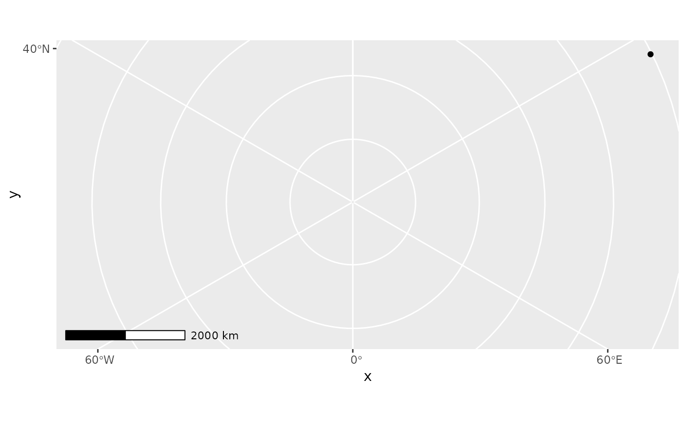

Spatial-aware scalebar annotation
annotation_scale( mapping = NULL, data = NULL, ..., plot_unit = NULL, bar_cols = c("black", "white"), line_width = 1, height = unit(0.25, "cm"), pad_x = unit(0.25, "cm"), pad_y = unit(0.25, "cm"), text_pad = unit(0.15, "cm"), text_cex = 0.7, text_face = NULL, text_family = "", tick_height = 0.6 ) GeomScaleBar
| mapping, data, ... | See Aesthetics |
|---|---|
| plot_unit | For non-coord_sf applications, specify the unit for x and y coordinates. Must be one of km, m, cm, mi, ft, or in. |
| bar_cols | Colours to use for the bars |
| line_width | Line width for scale bar |
| height | Height of scale bar |
| pad_x, pad_y | Distance between scale bar and edge of panel |
| text_pad, text_cex, text_face, text_family | Parameters for label |
| tick_height | Height of ticks relative to height of scale bar |
An object of class GeomScaleBar (inherits from Geom, ggproto, gg) of length 5.
A ggplot2 layer.
The following can be used as parameters or aesthetics. Using them as
aesthetics is useful when facets are used to display multiple panels,
and a different (or missing) scale bar is required in different panels.
Otherwise, just pass them as arguments to annotation_scale.
width_hint: The (suggested) proportion of the plot area which the scalebar should occupy.
unit_category: Use "metric" or "imperial" units.
style: One of "bar" or "ticks"
location: Where to put the scale bar ("tl" for top left, etc.)
line_col and text_col: Line and text colour, respectively
cities <- data.frame( x = c(-63.58595, 116.41214), y = c(44.64862, 40.19063), city = c("Halifax", "Beijing") ) ggplot(cities) + geom_spatial_point(aes(x, y), crs = 4326) + annotation_scale() + coord_sf(crs = 3995)